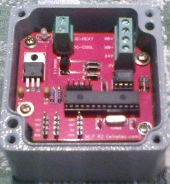

Just Finished the hardware, firmware and documentation for the Wine Technologies Multi-Level-Probe. It was nice to go back to a simpler type of project but the customer wanted it that way so it could be assembled in New Zealand (and, I guess, will have a little kiwi logo attached)
This was a re-design of a surface mount hardware I did in 2007, with some additional PLC functions added. For the project I was also asked to re-write the original pascal code into C, which is actually quite easy when you don’t have to mess with strings. As an interesting comparison, the original 2.4K hex file produced by the Mikro-Pascal compiler ballooned to 4K by the unoptimised MPLAB-X Compiler (though I am using the free version of it deliberately as the customer probably wants to take the project in-house) the free version of MPLABX/XC8 adds a fair bit of crap to the code (like additional NOPS etc) to make the paid for compiler with optimisations look good. This bloat is not a problem in this project as the target PIC18F24K22 has 16K of flash.
Interesting also is that in the 7 years since the original design the original PIC18F2420 is still available but has several higher J and K specified almost compatible derivatives for about half the price so it was worth a few lines of code initialisations to drop $2 off each boards BOM cost.
The actual project is commercial and closed source so I cant really go into too much details on the design or changes but the good thing is its money in the bank and one less thing I will need to do. (deliberately vague finished board photo shown)

As with most local companies I will be having my holidays from the 18th December until the 6 January so I’m hoping the mobile PCB’s will come back before then so I can get them all tested.
Me and my poor old Rover 75 may have to depart company in the next few weeks, I had a serious radiator leak and there are no spares in NZ or Aussi, currently the radiator is gunked up and working but as this is my primary work vehicle I will need to bite the bullet and buy a new company car. Not too much choice in sunny Blenheim, we have 6 new car dealerships with about 10 car companies represented, I will try and test drive everything and go with the most comfortable with a nice (and not too techie) cabin. Most car reviews are so subjective, I have driven 7 new cars so far on the same 8KM test circuit and there is really is bugger all difference I can see yet they score from 5 to 10 in the car reviews! I’m glad I usually ignore these or I would never have test driven and bought the Rover 🙂